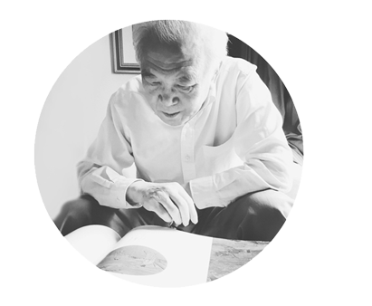

-
吴钊先生 | 国家级非遗古琴艺术代表性传承人《中国古琴名画珍赏》一书反映了不用时代古琴与文人生活之间的关系，有价值，有意义。
-
李祥霆先生 | 国家级非遗古琴艺术代表性传承人《中国古琴名画珍赏》琴画收编全面，版式印刷考究。每一个时代，每一位琴人，都需要一本，可以永久传世。
-
龚一先生 | 国家级非遗古琴艺术代表性传承人《中国古琴名画珍赏》展示了琴学、琴乐在古人生活中的地位，体现了古琴是古代文化生活中不可或缺的一部分。
-
楼宇烈先生 | 著名文化学者 哲学家仁正与中国古琴图书馆的同仁们精心编选的这本《中国古琴名画珍赏》，为了解中国古琴文化保存了一批珍贵的资料，为古琴文化开启了一个『古琴与名画』相关联的、新的研究领域，真是功德无量，嘉惠士林。


为了忠实再现原作神韵，展示中国琴文化的遗存，《中国古琴名画珍赏》将琴画的全景图和局部图加以展示，选用具有极高色彩还原能力和独特手感的东方书纸，采用高数位、高精度的原作摄影超清图版进行十微米调频制版印刷，墨韵古朴、纤毫毕现，力求充分体现与琴有关之细节。
《中国古琴名画珍赏》由曾获全球印刷业最高荣誉“班尼金奖”的设计师田之友先生操刀装帧设计、印刷巨匠雅昌文化集团承印，全书一函三卷配以布面精装书匣，随书限量发行一枚宣纸手工藏书票，呈供海内外研究者观察研究，欣赏学习。
专家认为，无论是从画史、美术史，或是乐器史、琴史的角度来看，《中国古琴名画珍赏》既是研究对象，亦是研究成果。它填补了中国古琴绘画整理汇编的历史空白，体现了古琴艺术在中国古代文人士大夫生活中的重要影响，是迄今最权威、最完整的古琴绘画集成，是对历代古琴文化艺术的一次大规模专题性研究成果，是中华民族古琴艺术史上珍贵的文化遗产，是广大古琴爱好者不可多得的珍藏！
专家认为，无论是从画史、美术史，或是乐器史、琴史的角度来看，《中国古琴名画珍赏》既是研究对象，亦是研究成果。它填补了中国古琴绘画整理汇编的历史空白，体现了古琴艺术在中国古代文人士大夫生活中的重要影响，是迄今最权威、最完整的古琴绘画集成，是对历代古琴文化艺术的一次大规模专题性研究成果，是中华民族古琴艺术史上珍贵的文化遗产，是广大古琴爱好者不可多得的珍藏！